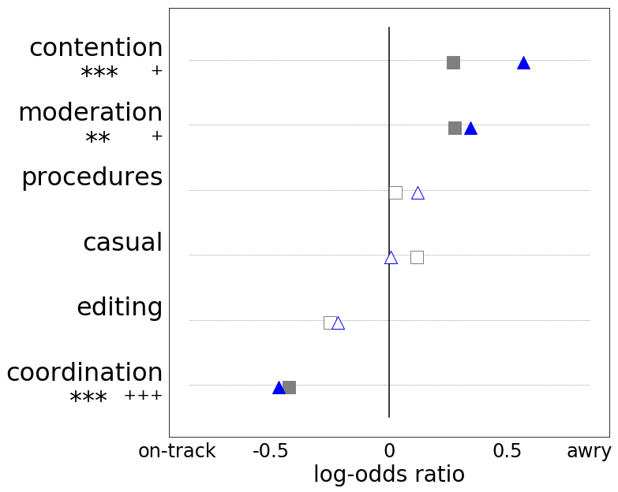

import warnings
warnings.filterwarnings('ignore')Applying the Expected Context Framework to Wikipedia discussions
This notebook demonstrates an application of the Expected Context Framework to analyze Wikipedia talk page discussions. We are working up to the following question: what types of comments are more likely to start conversations that eventually derail into toxic personal attacks, versus conversations that remain civil throughout? The notebook goes over a few key function calls along the way. See this paper for details on the analysis question and datasets, and this dissertation for details on the framework and more comments on the below analyses.
For this demo, we start by training an Expected Context Model on a collection of Wikipedia discussions (different from the dataset we later analyze). In short, we want to infer different rhetorical types of comments that occur at the start of these discussions. Via the framework, we’ll derive representations of comments based on their expected replies (the “forwards context” of the conversation), and then infer types of comments by clustering these representations. We interpret the resultant clusters as different rhetorical types.
For an extended version of this analysis, on a slightly older implementation of the model (using the PromptTypes functionality), see this notebook.
import pandas as pd
import numpy as np
import math
import os1. Loading and preprocessing the training data
from convokit import Corpus
from convokit import download# OPTION 1: DOWNLOAD CORPUS
# UNCOMMENT THESE LINES TO DOWNLOAD CORPUS
# DATA_DIR = '<YOUR DIRECTORY>'
# WIKI_CORPUS_PATH = download('wiki-corpus', data_dir=DATA_DIR)
# OPTION 2: READ PREVIOUSLY-DOWNLOADED CORPUS FROM DISK
# UNCOMMENT THIS LINE AND REPLACE WITH THE DIRECTORY WHERE THE TENNIS-CORPUS IS LOCATED
# WIKI_CORPUS_PATH = '<YOUR DIRECTORY>'wiki_corpus = Corpus(WIKI_CORPUS_PATH)wiki_corpus.print_summary_stats()Number of Speakers: 38462
Number of Utterances: 391294
Number of Conversations: 125292We represent Wikipedia comments as dependency-parse arcs; in order to capture rhetorical rather than topical information, we’ve removed nouns. These features are included with the release of the corpus, and can be loaded as follows:
wiki_corpus.load_info('utterance',['arcs_censored'])To make sure that the arcs are stored in the right format (i.e., as strings, not lists), we apply the following transformer:
from convokit.text_processing import TextProcessor
join_arcs = TextProcessor(input_field='arcs_censored', output_field='arcs',
proc_fn=lambda sents: '\n'.join(sents))
wiki_corpus = join_arcs.transform(wiki_corpus)In applying the framework, we need to associate utterances with their replies. One comment can receive multiple replies; here, we arbitrarily choose one (noting that future work could make better use of this additional information).
for ut in wiki_corpus.iter_utterances(selector=lambda x: x.reply_to is not None):
wiki_corpus.get_utterance(ut.reply_to).meta['next_id'] = ut.id2. Applying the Expected Context Framework
from convokit.expected_context_framework import ColNormedTfidfTransformer, ExpectedContextModelTransformerTo apply the Expected Context Framework, we start by converting the input utterance text to an input vector representation. Here, we represent utterances in a term-document matrix that’s normalized by columns (empirically, we found that this ensures that the representations derived by the framework aren’t skewed by the relative frequency of utterances). We use the ColNormedTfidfTransformer transformer to do this.
We found that it was preferable to derive different tf-idf representations (and hence different inverse document frequencies, normalization terms, and vocabularies) for comments that receive replies, and utterances that have predecessors. We make this partitioning by passing in different selectors to the fit functions below.
The two sets are of course overlapping, but the former set mostly contains comments that start conversations, and the second contains more comments that reply to conversation-starters. We note that we’d expect the language of conversation-starters and repliers to be slightly different (i.e., the former tend to be requests, and the latter tend to be responses to these requests).
first_tfidf_obj = ColNormedTfidfTransformer(input_field='arcs', output_field='first_tfidf', binary=True, min_df=50)
_ = first_tfidf_obj.fit(wiki_corpus, selector=lambda x: x.meta.get('next_id',None) is not None)
_ = first_tfidf_obj.transform(wiki_corpus)
second_tfidf_obj = ColNormedTfidfTransformer(input_field='arcs', output_field='second_tfidf', binary=True, min_df=50)
_ = second_tfidf_obj.fit(wiki_corpus, selector=lambda x: x.reply_to is not None)
_ = second_tfidf_obj.transform(wiki_corpus)We then initialize an Expected Context Model: * we specify that the conversational context we will derive our comment representations from is the reply, context_field=next_id * as input, the model will use tf-idf representations from vect_field=first_tfidf to represent comments, and context_vect_field=second_tfidf to represent context comments * we’ll derive n_svd_dims=25-dimensional representations, and infer n_clusters=6 clusters * to infer these clusters, we will cluster term-level representations, cluster_on='terms'. Note that by default, the model will cluster comment-level representations, but in this context (perhaps since comments can get fairly long and unstructured), clustering on terms produces more interpretable output.
ec_fw = ExpectedContextModelTransformer(
context_field='next_id', output_prefix='fw',
vect_field='first_tfidf', context_vect_field='second_tfidf',
n_svd_dims=25, n_clusters=6, cluster_on='terms',
random_state=1000, cluster_random_state=1000)(note that the following call takes some time to run)
ec_fw.fit(wiki_corpus, selector=lambda x: (x.meta.get('first_tfidf__n_feats',0)>=1)
and (x.meta.get('next_id',None) is not None),
context_selector=lambda x: (x.meta.get('second_tfidf__n_feats',0)>= 1)
and (x.reply_to is not None))Inferred comment types
Below, we print representative terms, comments, and context terms and comments for the clusters we’ve inferred (note that the output is quite long)
ec_fw.print_clusters(k=10,corpus=wiki_corpus,max_chars=200)CLUSTER 0 0
---
terms
cluster_dist
index
'm_* 0.497348
thought_* 0.498929
guess_* 0.508338
sorry>* 0.521577
know_* 0.526687
had_* 0.531728
got_* 0.537593
's_* 0.543810
have>* 0.544413
saw_* 0.549280
context terms
cluster_dist
index
saw_* 0.598228
yes>* 0.603147
knew_* 0.607990
but>* 0.614208
oh>* 0.615937
anyway>* 0.619059
hey>* 0.620055
guess_* 0.620307
oh_* 0.635252
and>* 0.639936
utterances
> 512605 0.456 Thanks for your help but I thought I'd point [http:\/\/en.wikipedia.org\/w\/index.php?title=List_of_Playboy_Playmates_of_1962&curid=27082401&diff=358137637&oldid=357917384 this] out. Thanks again, <s
> 384706 0.463 Sorry but I don't know. I 've seen people doing this manually based. --
> 58226 0.464 Hi WFinch. I think it's awesome that you're improving Nero Wolfe articles, but I'm curious - do you know the copyright status of the scripts you are linking to in some articles (eg [[The Silent Speake
> 141668 0.464 [http:\/\/en.wikipedia.org\/w\/index.php?title=Halloween_%281978_film%29&curid=20179415&diff=443119488&oldid=443117044 This] was gorgeous. I thought I had done some severe cutting in my plot trimming
> 294263 0.468 Yes, I saw the comment, and thought it was likely to be the case. I found myself itching to add ''proto-'' in the lede, but that's probably a worse fudge than using an anachronistic term that is widel
> 325392 0.469 Well, to be honest I knew I was probably not following the right protocol! I thought my solution would be ok but I guess I should have asked for help instead. Anyways, thanks for the advice and the cl
> 134322 0.470 LOL! Sorry about that man. I just think all this confusing about it is ridiculous. By the way, the reason I suggested the second cover go by Disc Two or Meet Miley Cyrus Cover is so it won't get contr
> 341552 0.471 (I think when referring to chart positions, it is better to use numerals whether or not our friendly style guide suggests it, if in fact it comments (as opposed to spelling out numbers one to nine).
> 24168 0.471 By the way, just thought I'd say that I think the recent edits you made to this article look good. There's so much negativity all the time I like to consciously remember to comment on useful additions
> 549552 0.472 Ah... that makes sense. Thanks. Do you know who is responsible for picking names? The [[Admiralty]]? I've seen a lot of RN ship names (especially 18th century) that seem like somebody threw a dart at
context-utterances
>> 141287 0.550 Hey thanks mate atleast someone has the logical mind to remove trashy pov its a shame that admins who protect these articles like k2 and nanga parbat turn a blind eye towards this blatant pov just bec
>> 177807 0.554 Very nice, well done, Maybe format the dates? from 00-00-00, to 1 August 1111, as an exemple. but overall, you did a wonderful job on the list. <br \/> \u2013 ''
>> 70287 0.568 Re Eddie Watkins. Yes it is, he joined Wigan in March 1939. I'll update the article to reflect his league career today. When I started writing many of the Welsh articles I had a limited number of refe
>> 422098 0.569 I saw you had contributed to video game articles and I remember many video game pictures from Ubisoft were deleted from Commons, so I wondered what if anything you might have uploaded there, since it'
>> 344312 0.578 Thanks. But I saw that William, a real expert, already talked to him. --
>> 234888 0.586 It's no big deal. After thinking about it, I guess you're right about this. --
>> 23171 0.590 Yeah, I guess it makes sence. Since the CFL doesn't play all their games on one particular day of the week. And thanks the website, I got all my information from [http:\/\/michigan-football.com\/cfl\/
>> 394976 0.592 hi Maurreen, it more happenstance than system, i was filling in red links at [[MacArthur Fellows Program]], (which to me is a snowball keep) and checking histories, saw a couple that i undid, also fou
>> 576498 0.594 Wow Mongo, never expected this. You've had a hard time here, but your work dealing with fringe views is invaluable. I hope you can look beyond this one block and see that you are very much appreciated
>> 583441 0.596 I was just starting to RC patrol when I saw that diff. I thought it looked fimiliar and I realised I had one just like that[http:\/\/en.wikipedia.org\/w\/index.php?title=User_talk%3ASpellcast&diff=149
====
CLUSTER 1 1
---
terms
cluster_dist
index
let_* 0.507374
done_* 0.509473
appreciate_* 0.512464
tried_* 0.524234
help_* 0.530647
let_know 0.536958
look_* 0.540756
hi>* 0.545773
hi_* 0.548464
take_* 0.549002
context terms
cluster_dist
index
okay>* 0.641118
ok>* 0.646864
alright>* 0.653850
uploaded_have 0.670640
update_* 0.681726
ok_* 0.683843
helps_* 0.705702
cool>* 0.707850
cool_* 0.709546
hope_do 0.712557
utterances
> 164003 0.446 Good work on the list of Jat clans. It would be nice if there were a more current census. Let me know if you need help with polishing on articles you write, and I will be glad to edit. You might use
> 550714 0.452 Hello Splash! I haven't had much of a chance for correspondance lately, getting ready for the start of the new semester and all that, but I've been wondering what your ideas are concerning the [[Londo
> 350317 0.454 If you do ever choose to run again, please let me know. I'll be there. —
> 340943 0.455 Let me know which sound files you want added. I'd like to see \"Harborcoat\", but I suppose I would have to be \"Letter Never Sent\" or \"Camera\" from that album.
> 161635 0.456 Once you've figured out what format you want, let me know what archive names you want and what you want at the top of each archive and I'll be able to set up the bot for you. '''<span style=\"font-fam
> 365578 0.457 Hi Sydney. I hope this finds you well. My name is Matthew Roth and I'm a Storyteller at the Wikimedia Foundation. We're chronicling the inspiring stories of the Wikipedia community, especially editors
> 339036 0.457 Hi Leah, good hearing from you again! When I'm creating books, I mainly create them on two merits: The first is that I must have some sort of interest in the topic, and the second is that the topic mu
> 107916 0.459 You might try contacting user [[User talk:Colds7ream|Colds7ream]], who successfully took [[International Space Station]] through FAC a year ago -- they may be both knowledgeable and willing to help wi
> 570792 0.460 I actually don't know how to do that. If you can point me at any examples of what you're trying to do, I'll prod at it and let you know how it works. I'd like to encourage you to focus less on your us
> 462990 0.461 Your help is very much appreciated. I don't know if I understand exactly all what you mean but I will try my best. The examples of other composers that you suggested will be a great help. I will be in
context-utterances
>> 296304 0.601 Alright; got someone else I could bug? I've already contacted Fuchs. <font face=\"Verdana\">
>> 165740 0.610 Thanks, I appreciate the help. The list above helps, and I'll mess with it some more to see if any further scrutiny is required to eliminate the chances of tagging incorrect images.
>> 347273 0.616 Hi, you have some good comments. I started a rudimentary Core Topics COTW at [[Wikipedia:Version 1.0 Editorial Team\/Core topics\/Core topics COTW]]. We can see how it goes. Thanks.
>> 321554 0.618 OK with the group we can do it all. Although Picasso images are proving to be tough to work with because of copyrights and estate issues. Olympia, maybe or late Monet - what a story.
>> 551717 0.623 Great, I hate autoblocks. They're more trouble than they're worth in situations like these. Ok, off to deliver pizzas...<font color=\"#4682B4\">
>> 90138 0.623 Okay. Nevertheless, please drop a line on the football project talk page once the discussion has been opened. --
>> 374426 0.625 Okay, I appreciate your looking into it,
>> 545836 0.629 Hey there. Yes, I do see your argument, but unfortunately with organisations like the CDC and WHO all referring to this as \"swine influenza\" (see [http:\/\/www.who.int\/csr\/disease\/swineflu\/en\/i
>> 543511 0.631 Ok then... I appreciate the recognition though. Thanks, <b><font face=\"Arial\" color=\"1F860E\">[[User:BrendelSignature|Signature]]<\/font><font color=\"20038A\"><sup>
>> 239293 0.643 Since he hasn't edited since the end of August, I also dropped a copy on Jpgordon's page as well. Hopefully we'll hear from one of them soon.
====
CLUSTER 2 2
---
terms
cluster_dist
index
deleted_* 0.483710
deleted_be 0.542814
remove_* 0.551680
restored_* 0.560979
deleted_was 0.577411
deleted_not 0.580295
deleted_is 0.586556
find_can 0.586681
remove_from 0.589373
remove_please 0.591656
context terms
cluster_dist
index
hello_* 0.617250
restored_'ve 0.634718
restored_* 0.635371
hello>* 0.662584
restored_have 0.666999
replaced_with 0.673871
since>* 0.675255
replaced_* 0.679293
tag_* 0.693324
provided_* 0.694144
utterances
> 116734 0.471 also ... you deleted mention in the body of at least one bio of the fact that the person was Jewish. Please RV all such deletions, or let me know why you do not wish to do so. Thanks. --
> 111384 0.473 To clarify, [[WP:G4]] only applies to articles deleted per a [[WP:XFD|deletion discussion]], not those deleted via [[WP:CSD]]. Cheers \u2014
> 373927 0.474 the article was deleted due to copyright infringement. OTRS has received permission from the copyright holder under CC-by-sa-3.0 to use the material. If you have OTRS access, please consult ticket# 20
> 23238 0.475 I know you've managed to deflect concerns about your userpage in the past, Timeshift, but I'm afraid it'll be best for everyone if you take GorillaWarfare's advice now, rather than taking this to an M
> 490974 0.476 Hi. Please do not recreate \"WP:USER.pce3@ij.net\". Doing so constitutes recreation of deleted material and will be deleted on sight and may lead to blocking of your account. --PS2pcGAMER (talk) 10:59
> 527977 0.478 The article was deleted at a second AfD nomination ([[Wikipedia:Articles for deletion\/List of city nicknames (2nd nomination)]]). The result on that nomination was delete. If you want to contest the
> 290756 0.480 The edit you made [http:\/\/en.wikipedia.org\/w\/index.php?title=Political_positions_of_Barack_Obama&diff=254112557&oldid=254098937 here] constitutes a misuse of the rollback feature, and I must ask y
> 42967 0.481 The inclusionists, so far as I know, have won the culture war at XfD. If you have even two or three refs from any even semi-decent source, the article will not be deleted. Moreover, you can make a cas
> 495307 0.482 The deletion log[http:\/\/en.wikipedia.org\/w\/index.php?title=Special:Log\/delete&page=Bernadette_Sands_McKevitt] states ''deleted \"Bernadette Sands McKevitt\" (csd a7)'' - I have no idea what a ''c
> 427636 0.482 You have your email turned off. Therefore, you have to email me. If you're referring to this: [[Wikipedia:Articles for deletion\/Alexander MacGregor]], the result was '''no consensus'''. Any inform
context-utterances
>> 344102 0.589 Hi Mrg. If you check out [[Latin alphabet]], you will see that this term is not restricted to the original Roman alphabet, but includes the close derivatives like German (with umlauts \xe4,\xdc,...),
>> 263586 0.599 Hello. Well, everything needs to be verifiable. If the photograph says that it can be reproduced then I would advise that that permission also needs to be be uploaded and linked to.
>> 517615 0.611 Thank you for warning me about 3rr. I was acting in goodwill as proposed by [[User:Kmccoy|kmccoy]]'s mediation, by substituting the compromise (temp) version of the article for the disputed one. All p
>> 336908 0.616 Hi Mike, seriously, nothing personal. If I hadn't made the changes, somebody, eventually would have. I would recommend that you review some of Wikipedia's policy, guidelines and FAQs at [[WP:HELP]]. A
>> 264359 0.616 Hi. <nowiki>{{nn-band}}<\/nowiki> means \"non-notable band.\" Your article failed the criteria for inclusion outlined at [[WP:BAND]]. For inclusion, you MUST cite several reliable third party referenc
>> 123827 0.626 Hello! It so happens that my mother (76 years old) was with him in the same class and remembers him very well. If you need any details on personnal basis that could clarify anything - just ask. --
>> 503563 0.626 Oh for heaven's sake you two. Stop bickering about the past. Homologeo, if some of the deleted material is worth discussing then discuss it. You don't need to restore old edits for that. If it is hard
>> 532648 0.627 In that case, no problem. Page is restored. For proper formatting, I advise you to check some similar articles and try to format it in the similar way. Any by the way, if you upload a photo, you shoul
>> 480730 0.629 Man was that ever. Ok, I will first review you edits to see what we need to do. If you don't have email set please do. Friday is also your coach and I advise you to contact him to see if we can set u
>> 117653 0.630 842U, I see that elsewhere you have recently directed this editor to [[WP:OWN]]. IIRC when a similar issue arose concerning this editor, [[User:Daniel_J._Leivick]] took a special interest in him and g
====
CLUSTER 3 3
---
terms
cluster_dist
index
is_* 0.558697
is_there 0.564460
is_not 0.576292
is_is 0.591916
even>* 0.593364
seems_to 0.600885
's_not 0.609943
what>* 0.614863
are_not 0.617335
mean_does 0.617859
context terms
cluster_dist
index
to>* 0.631598
has_* 0.631947
is_* 0.650184
as>* 0.660322
is_fine 0.662922
in>* 0.668126
is_to 0.669242
is_see 0.678658
because>* 0.689098
makes_* 0.689591
utterances
> 531550 0.526 It is not that big of a deal or anything, but there are some college\/university navbars that have unique fonts on the heading. The only reason I did it like that, is because that specific font is ver
> 526290 0.531 Is the asterisk in the infobox a stray mark or does it mean something?
> 356839 0.533 In the caption to this phote there is a small error. The word \"rebar\" is slang for reinforcement bar. What the workers are placing is not rebar but welded wire reinforcement, abbreviated WWR, someti
> 559270 0.535 Deleting is not the most appropiate solution to the problem. Protecting the article, blocking the offending users and continued editing efforts are better solutions.
> 332579 0.535 There is one important factor here: changing a category to a list is not a removal of information.
> 61281 0.536 But lack of reliable sources for an article in the process of being written is not grounds for speedy deletion!
> 189103 0.536 But Ireland is not in the World Cup. Extremely sexy 12:19, 25 June 2006 (UTC)
> 133651 0.538 There is no cabal, and this is not a secret message. 000393DB396E. --
> 178596 0.538 what a lot of utter (expletive deleted) - the order of the logic by the editor is fundamentally wrong and against the general intent of things work - add content and then verify is not how it works -
> 134734 0.540 I think a reader expects a link to the authority when the link is so labelled as being to the authority. The unitary authority in this case ''is'' [[Cornwall Council]] - [[Cornwall]] is ''not'' a unit
context-utterances
>> 159825 0.613 For some reason, the original block failed, as it didn't register in the block log. But the good news is that the re-block succeeded. --
>> 40914 0.622 Hehe, I'm relieved to see that the bot has very little idea of how I think - though the obvious articles related to Wikileaks are always interesting. ;) I can see that after my editing the [[Critical
>> 210360 0.626 And giving that terminology too much weight. That is all my complaint is.
>> 280606 0.626 Paper33d was protesting Morwen's warnings (plural) and clearly not understanding the issue when I added my first note, which was explanatory and '''not''' a warning. The policy against blanking talk p
>> 197116 0.628 Do you have some further information on this? I know that &ndash; is the correct html source but the Wikipeda software does more than just displaying html. For example umlaut \xe4 doesn't have to
>> 505876 0.629 I understand that rule with the talk headers and I only do it as a minor edit when Im there doing other things. The problem I have with that rule in general is that without the talk header newbys and
>> 483934 0.631 And I hate to think he's a [[Dungeons & Dragons|D&D]] fan, but the only reference I can find to that term is in [[Nodwick]]. Go figure... -
>> 275755 0.634 And \u09b8\u09cc\u09ae\u09cb is just my name in [[Bengali language|Bengali]]. --''
>> 88155 0.637 As my German friends used to say ''Machs Nicth'' sp, makes no difference as long as a source supports whatever section they fall under. --
>> 405770 0.637 In the spirit of good faith, of course, I will assume that this was a case of some overly fast twinkle-editing which resulted in a message going to the wrong person, which I will of course forgive, wi
====
CLUSTER 4 4
---
terms
cluster_dist
index
thinking_* 0.738030
think_be 0.741211
be_there 0.751830
start_should 0.758371
make_sure 0.759340
thinking_about 0.760743
what>do 0.765511
thinking_'m 0.768603
be_might 0.772642
hmm>* 0.772663
context terms
cluster_dist
index
split_* 0.798109
turn_* 0.832830
perhaps>* 0.835086
then>* 0.837803
but>if 0.845863
think_yes 0.854162
could_* 0.854613
finish_* 0.858283
tend_be 0.858555
set_* 0.858626
utterances
> 344270 0.705 Maybe its a matter of definition. Where does \"uncomfortable\" go to \"painful\"? To be honest, my evidence is purely anecdotal - I was thinking about warm water mixers in showers. Modern ones often a
> 157057 0.709 I agree about making an end-box version of the Holocaust infobox to be used in place of the sidebar version. I don't know a lot about infobox editing, however - though this might be an opportunity to
> 563614 0.710 Poor [[User:Ron Ritzman|Ron Ritzman]]! ☺<p>I see that you blocked {{user|Frnnrthprd}}. I, given [http:\/\/en.wikipedia.org\/w\/index.php?diff=390963663&oldid=390939755 this], which is BLP vanda
> 389411 0.711 Hmm, you raise good arguments. If the material is posted directly on the talk page a header is indeed required. Thinking about it a bit. '''Yoenit''' (
> 176895 0.711 Shouldn't it be formatted like another notability guideline, ala [[Wikipedia:Notability (people)]]? There might be a school one already? \u2022 <span style=\"font-variant:small-caps\"><font color=\"#8
> 399915 0.714 In other news . . . I'd been thinking of nominating one or two clueful people as administrator. These are people who've been beavering away ''writing articles'' and making informative contributions to
> 27579 0.714 Also I would be curious what you think about the choices it makes about which symbols are suitble for rendering as simple html. To me many things should probably include spaces that do not. But issu
> 487973 0.715 My best advice to you is that one should avoid getting caught up in the debates on the RfA, or worrying to much about this go-round. While this RfA is unlikely to succeed, I think if you broaden your
> 197697 0.719 You don't have infoboxes everywhere. If it is about inserting original script in normal articles, it might be better to have something like the IPA template and a font presented horizontally. If so, w
> 492604 0.719 I would agree if it was clear that all of these categories should be treated the same. That may well be the case. There is also another interesting question raised here if you look at the parent cat
context-utterances
>> 271870 0.773 Maybe if the building has enough content then split it into an own separate article... <small style=\"font:bold 12px Courier New;display:inline;border:#009 1px dashed;padding:1px 6px 2px 7px;white-spa
>> 191805 0.793 Ok, split.
>> 337287 0.794 Then Buddha must love me :). Hey, no biggie here. Cheers and take care! --
>> 577834 0.798 That's good to see that you've noticed some errors, I assume there could be many. I didn't create the content, I only split existing content from [[Mickey Mouse]] into a new article. --
>> 96972 0.799 BTW, if the section gets too long, it can always be split off into a new article.
>> 183800 0.801 Troublesome? Should I be donning my flameproof suit yet again? Argh! but thank you. Much to be done on Khokhar, I think. -
>> 575632 0.805 Hire me to be your campaign manager. With any luck, we'd split the Republican vote right in half.\u2014
>> 48820 0.807 We agree that [http:\/\/www.os390-mvs.freesurf.fr\/mvshist.htm MVS... a long history] is \"not a well-established source, it's just the readily available one\" (although it looks like it's written by
>> 247277 0.810 Should I pass the pooh to Materialscientist who changed to the de-version? (No I won't) --
>> 141862 0.812 FYI, the basketball coach navboxes for five of the six major conferences (ACC, Big Ten, Big XII, Pac-10, SEC) have now been upgraded. Once we finish enhancing the Division I basketball navboxes and p
====
CLUSTER 5 5
---
terms
cluster_dist
index
reverted_* 0.610958
report_* 0.618923
revert_* 0.637270
appears_* 0.650385
explain_* 0.675527
warned_* 0.682376
think_did 0.685245
for>* 0.687296
was_not 0.687717
welcome_to 0.689001
context terms
cluster_dist
index
ignore_* 0.715005
fixed_have 0.742801
refused_* 0.746171
accusing_* 0.759295
apologize_* 0.765259
handled_* 0.766994
extended_* 0.767898
continue_do 0.768159
keeping_* 0.774206
clarify_* 0.775986
utterances
> 279892 0.564 First of all, about edit - Eupator removed not only my edit but others. I have showed now on talkpage another neutral source to support my edit. But question is not about content but about behavior. A
> 349468 0.569 And they are back again [http:\/\/en.wikipedia.org\/w\/index.php?title=Trigger_point&diff=213404241&oldid=213149905]. I reverted this time. --
> 385865 0.572 Yes Fainites, direktor reverted all other users as well. And, no, C didn\xb4t edit-warred this time, he only reverted direktor, who actually started edit-warring again, just as he continuosly does in
> 364488 0.572 I have [[Totimoshi|restored the article]] with some text and refs. It's not much, but I believe that the notability has been established because the band has been reviewed by multiple unrelated public
> 267363 0.577 Yes, there is a guideline, policy, or whatever. \"Requirement\" on Wikipedia is to strong a word. But it does say in [[WP:Footnotes]] or [[WP:CITE]] or someplace that a \"bunch of links at the bottom\
> 362856 0.578 You reverted the page four times, Sanders. That's a violation.
> 214104 0.580 I've just noticed your hidden comment in this edit, [http:\/\/en.wikipedia.org\/w\/index.php?title=Will_Eisner&diff=next&oldid=171281643]. Please note such comments are counter to our policies on [[W
> 476805 0.581 Thanks for your offer to unblock me. I would obviously have accepted your conditions but was so thoroughly disgusted by the ridiculousness of the block that I didn't even bother to sign in for a week
> 153679 0.585 Yes, the latter certainly appears to be a breach of the traditional rights and also of Magna Carta - yet according to a judge interviewed on R4 the other night, it is precisely what Parliament has dec
> 484395 0.585 I was going to be bold and \"fix\" this, but it appears that it will require an administrator change and I found that you had explicitly changed this stuff. Can you please explain to me why DNS shou
context-utterances
>> 234254 0.686 Hi Harry<br> Yes, the National Jockey's Hall of Fame did exist at Pimlico and burnt to ground when [[Pimlico]]'s historic Clubhouse caught fire and then both ceased to exist. That was infact the build
>> 569540 0.691 Eh? I stopped using that '''ages''' ago, when first alerted to a problem! My sig now links though to my talk page and contains no image or other html\/wiki code. Regards,
>> 573280 0.712 How is Gator1? I hope everything has worked out but I'm disappointed to have not seen some decisive stance taken by the [[User talk:Jimbo Wales#Gator1 stalked in the real world|wikipedia chief]]. I ho
>> 215912 0.714 I sign off mostly all my comments with \"Thanks!\" Just habbit I guess. I apologize if I offended you by saying that.
>> 408379 0.716 Just FYI, you struck almost your entire guide - which I think was an typo in the wikicode - so I [http:\/\/en.wikipedia.org\/w\/index.php?title=User:Heimstern\/ACE2010&diff=400313994&oldid=400311822 f
>> 441447 0.722 Ok, thx a lot. I corrected my mistake in RFC: [http:\/\/en.wikipedia.org\/w\/index.php?title=Wikipedia%3ARequests_for_comment%2FCollect&diff=284157460&oldid=284155997] He still violated terms of his u
>> 513939 0.724 Okay, I accept that this case is analogous to species names.
>> 327599 0.728 Your right I copied each page and then changed all the information to try and save time. Thanks for cleaning them up.
>> 267445 0.729 I apparently sent you (and a some other people) the wrong stuff by mistake ! This whole FA thing is complicated and as it turns out the article is [http:\/\/en.wikipedia.org\/wiki\/Wikipedia:Featured_
>> 431892 0.730 Apology accepted :) Okay, if the consensus is for there to be no hyphens, I'll accept that, though it still comes as a surprise, amd still doesn't explain why adverbs which don't end -ly aren't treate
====
demo continues below
Per our interpretation, we assign the following names to these clusters:
ec_fw.set_cluster_names(['casual', 'coordination',
'procedures', 'contention',
'editing', 'moderation'])ec_fw.print_cluster_stats()| utts | terms | context_utts | context_terms | |
|---|---|---|---|---|
| casual | 0.336966 | 0.195341 | 0.201834 | 0.205236 |
| contention | 0.097679 | 0.174233 | 0.202557 | 0.237722 |
| coordination | 0.348370 | 0.199721 | 0.136531 | 0.105293 |
| editing | 0.019979 | 0.160892 | 0.225581 | 0.202943 |
| moderation | 0.097966 | 0.153724 | 0.118555 | 0.130136 |
| procedures | 0.099040 | 0.116089 | 0.114942 | 0.118670 |
2. Application to analysis data
We now use the comment types we’ve just derived to analyze a dataset containing conversations that eventually derail into toxic behavior, and conversations that stay on track throughout. We load this data:
# OPTION 1: DOWNLOAD CORPUS
# UNCOMMENT THESE LINES TO DOWNLOAD CORPUS
# DATA_DIR = '<YOUR DIRECTORY>'
# AWRY_CORPUS_PATH = download('conversations-gone-awry-corpus', data_dir=DATA_DIR)
# OPTION 2: READ PREVIOUSLY-DOWNLOADED CORPUS FROM DISK
# UNCOMMENT THIS LINE AND REPLACE WITH THE DIRECTORY WHERE THE TENNIS-CORPUS IS LOCATED
# AWRY_CORPUS_PATH = '<YOUR DIRECTORY>'awry_corpus = Corpus(AWRY_CORPUS_PATH)awry_corpus = awry_corpus.filter_conversations_by(lambda convo: convo.meta['annotation_year'] == '2018')
# here we filter to consider only the conversations from the original paperawry_corpus.print_summary_stats()Number of Speakers: 2010
Number of Utterances: 6363
Number of Conversations: 1168We start by extracting the same noun-less dependency parse arcs that we used when training the model, above. To do this, we need to load the dependency parses, and then apply a few additional transformers, below:
awry_corpus.load_info('utterance',['parsed'])from demo_text_pipelines import wiki_arc_pipeline
# see `demo_text_pipelines.py` in this demo's directory for details
# in short, this pipeline will compute the dependency-parse arcs we use as input features,
# but will skip over utterances for which these attributes already exist
awry_corpus = wiki_arc_pipeline().transform(awry_corpus)We represent the comments from the new dataset as tf-idf vectors, using the vocabulary and parameters we’ve derived over the training data:
awry_corpus = first_tfidf_obj.transform(awry_corpus)
awry_corpus = second_tfidf_obj.transform(awry_corpus)Finally, we apply the trained model to transform the new dataset. In particular, we annotate each comment with an attribute, fw_clustering.cluster, that denotes the comment type it’s assigned to:
awry_corpus = ec_fw.transform(awry_corpus)To facilitate subsequent analyses, we will gather the comment types for each comment into a table:
cluster_assign_df = awry_corpus.get_attribute_table('utterance',['fw_clustering.cluster_id_'])
type_assignments = np.zeros((len(cluster_assign_df), 6))
type_assignments[np.arange(len(cluster_assign_df)),cluster_assign_df['fw_clustering.cluster_id_'].values.astype(int)] = 1
cluster_assign_df = pd.DataFrame(columns=np.arange(6), index=cluster_assign_df.index, data=type_assignments)
cluster_assign_df.columns = ec_fw.get_cluster_names()cluster_assign_df.head()| casual | coordination | procedures | contention | editing | moderation | |
|---|---|---|---|---|---|---|
| id | ||||||
| 146743638.12652.12652 | 0.0 | 0.0 | 0.0 | 0.0 | 1.0 | 0.0 |
| 146743638.12667.12652 | 1.0 | 0.0 | 0.0 | 0.0 | 0.0 | 0.0 |
| 146842219.12874.12874 | 1.0 | 0.0 | 0.0 | 0.0 | 0.0 | 0.0 |
| 146860774.13072.13072 | 1.0 | 0.0 | 0.0 | 0.0 | 0.0 | 0.0 |
| 143890867.11926.11926 | 0.0 | 0.0 | 0.0 | 0.0 | 1.0 | 0.0 |
3. Analysis: comparing comment types in awry versus on-track conversations
We start by preprocessing the data, to facilitate our comparison of awry versus on-track conversations. Ultimately, we will compare the occurrence of comment types in the first and second comments of these discussions.
# first, we need to directly map comment IDs to their conversations. We'll build a DataFrame to do this
comment_ids = []
convo_ids = []
timestamps = []
page_ids = []
for conversation in awry_corpus.iter_conversations():
for comment in conversation.iter_utterances():
# section headers are included in the dataset for completeness, but for prediction we need to ignore
# them as they are not utterances
if not comment.meta["is_section_header"]:
comment_ids.append(comment.id)
convo_ids.append(comment.root)
timestamps.append(comment.timestamp)
page_ids.append(conversation.meta["page_id"])
comment_df = pd.DataFrame({"conversation_id": convo_ids, "timestamp": timestamps, "page_id": page_ids}, index=comment_ids)
# we'll do our construction using awry conversation ID's as the reference key
awry_convo_ids = set()
# these dicts will then all be keyed by awry ID
good_convo_map = {}
page_id_map = {}
for conversation in awry_corpus.iter_conversations():
if conversation.meta["conversation_has_personal_attack"] and conversation.id not in awry_convo_ids:
awry_convo_ids.add(conversation.id)
good_convo_map[conversation.id] = conversation.meta["pair_id"]
page_id_map[conversation.id] = conversation.meta["page_id"]
awry_convo_ids = list(awry_convo_ids)
pairs_df = pd.DataFrame({"bad_conversation_id": awry_convo_ids,
"conversation_id": [good_convo_map[cid] for cid in awry_convo_ids],
"page_id": [page_id_map[cid] for cid in awry_convo_ids]})
# finally, we will augment the pairs dataframe with the IDs of the first and second comment for both
# the bad and good conversation. This will come in handy for constructing the feature matrix.
first_ids = []
second_ids = []
first_ids_bad = []
second_ids_bad = []
for row in pairs_df.itertuples():
# "first two" is defined in terms of time of posting
comments_sorted = comment_df[comment_df.conversation_id==row.conversation_id].sort_values(by="timestamp")
first_ids.append(comments_sorted.iloc[0].name)
second_ids.append(comments_sorted.iloc[1].name)
comments_sorted_bad = comment_df[comment_df.conversation_id==row.bad_conversation_id].sort_values(by="timestamp")
first_ids_bad.append(comments_sorted_bad.iloc[0].name)
second_ids_bad.append(comments_sorted_bad.iloc[1].name)
pairs_df = pairs_df.assign(first_id=first_ids, second_id=second_ids,
bad_first_id=first_ids_bad, bad_second_id=second_ids_bad)tox_first_comment_features =pairs_df[['bad_first_id']].join(cluster_assign_df, how='left', on='bad_first_id')[cluster_assign_df.columns]
ntox_first_comment_features =pairs_df[['first_id']].join(cluster_assign_df, how='left', on='first_id')[cluster_assign_df.columns]
tox_second_comment_features =pairs_df[['bad_second_id']].join(cluster_assign_df, how='left', on='bad_second_id')[cluster_assign_df.columns]
ntox_second_comment_features =pairs_df[['second_id']].join(cluster_assign_df, how='left', on='second_id')[cluster_assign_df.columns]We compute log-odds ratios of each comment type, comparing the awry and on-track conversations. We will also compute significance values from binomal tests comparing the proportion of awry-turning conversations exhibiting a particular comment type to the proportion of on-track conversations.
from scipy import statsdef get_p_stars(x):
if x < .001: return '***'
elif x < .01: return '**'
elif x < .05: return '*'
else: return ''
def compare_tox(df_ntox, df_tox, min_n=0):
cols = df_ntox.columns
num_feats_in_tox = df_tox[cols].sum().astype(int).rename('num_feat_tox')
num_nfeats_in_tox = (1 - df_tox[cols]).sum().astype(int).rename('num_nfeat_tox')
num_feats_in_ntox = df_ntox[cols].sum().astype(int).rename('num_feat_ntox')
num_nfeats_in_ntox = (1 - df_ntox[cols]).sum().astype(int).rename('num_nfeat_ntox')
prop_tox = df_tox[cols].mean().rename('prop_tox')
ref_prop_ntox = df_ntox[cols].mean().rename('prop_ntox')
n_tox = len(df_tox)
df = pd.concat([
num_feats_in_tox,
num_nfeats_in_tox,
num_feats_in_ntox,
num_nfeats_in_ntox,
prop_tox,
ref_prop_ntox,
], axis=1)
df['num_total'] = df.num_feat_tox + df.num_feat_ntox
df['log_odds'] = np.log(df.num_feat_tox) - np.log(df.num_nfeat_tox) \
+ np.log(df.num_nfeat_ntox) - np.log(df.num_feat_ntox)
df['abs_log_odds'] = np.abs(df.log_odds)
df['binom_p'] = df.apply(lambda x: stats.binom_test(x.num_feat_tox, n_tox, x.prop_ntox), axis=1)#*5
df = df[df.num_total >= min_n]
df['p'] = df['binom_p'].apply(lambda x: '%.3f' % x)
df['pstars'] = df['binom_p'].apply(get_p_stars)
return df.sort_values('log_odds', ascending=False)first_comparisons = compare_tox(ntox_first_comment_features, tox_first_comment_features)
second_comparisons = compare_tox(ntox_second_comment_features, tox_second_comment_features)Plotting the resultant log-odds ratios, we note some differences in which types of comments tend to start awry versus on track discussions: contentious comments tend to signal future troubles, while coordinating work is a signal that the conversation will remain civil throughout.
from matplotlib import pyplot as plt
%matplotlib inline# we are now ready to plot these comparisons. the following (rather intimidating) helper function
# produces a nicely-formatted plot:
def draw_figure(ax, first_cmp, second_cmp, title='', prompt_types=6, min_log_odds=.2, min_freq=50,xlim=.85):
# selecting and sorting the features to plot, given minimum effect sizes and statistical significance
frequent_feats = first_cmp[first_cmp.num_total >= min_freq].index.union(second_cmp[second_cmp.num_total >= min_freq].index)
lrg_effect_feats = first_cmp[(first_cmp.abs_log_odds >= .2)
& (first_cmp.binom_p < .05)].index.union(second_cmp[(second_cmp.abs_log_odds >= .2)
& (second_cmp.binom_p < .05)].index)
# feats_to_include = frequent_feats.intersection(lrg_effect_feats)
feats_to_include = first_cmp.index
feat_order = sorted(feats_to_include, key=lambda x: first_cmp.loc[x].log_odds, reverse=True)
# parameters determining the look of the figure
colors = ['blue', 'grey']
shapes = ['^', 's']
eps = .02
star_eps = .035
xlim = xlim
min_log = .2
gap_prop = 2
label_size = 14
title_size=18
radius = 256
features = feat_order
ax.invert_yaxis()
ax.plot([0,0], [0, len(features)/gap_prop], color='black')
# for each figure we plot the point according to effect size in the first and second comment,
# and add axis labels denoting statistical significance
yticks = []
yticklabels = []
for f_idx, feat in enumerate(features):
curr_y = (f_idx + .5)/gap_prop
yticks.append(curr_y)
try:
first_p = first_cmp.loc[feat].binom_p
second_p = second_cmp.loc[feat].binom_p
if first_cmp.loc[feat].abs_log_odds < min_log:
first_face = "white"
elif first_p >= 0.05:
first_face = 'white'
else:
first_face = colors[0]
if second_cmp.loc[feat].abs_log_odds < min_log:
second_face = "white"
elif second_p >= 0.05:
second_face = 'white'
else:
second_face = colors[1]
ax.plot([-1 * xlim, xlim], [curr_y, curr_y], '--', color='grey', zorder=0, linewidth=.5)
ax.scatter([first_cmp.loc[feat].log_odds], [curr_y + eps], s=radius, edgecolor=colors[0], marker=shapes[0],
zorder=20, facecolors=first_face)
ax.scatter([second_cmp.loc[feat].log_odds], [curr_y + eps], s=radius, edgecolor=colors[1], marker=shapes[1],
zorder=10, facecolors=second_face)
first_pstr_len = len(get_p_stars(first_p))
second_pstr_len = len(get_p_stars(second_p))
p_str = np.array([' '] * 8)
if first_pstr_len > 0:
p_str[:first_pstr_len] = '*'
if second_pstr_len > 0:
p_str[-second_pstr_len:] = '⁺'
feat_str = str(feat) + '\n' + ''.join(p_str)
yticklabels.append(feat_str)
except Exception as e:
yticklabels.append('')
# add the axis labels
ax.set_xlabel('log-odds ratio', fontsize=28)
ax.set_xticks([-xlim-.05, -.5, 0, .5, xlim])
ax.set_xticklabels(['on-track', -.5, 0, .5, 'awry'], fontsize=24)
ax.set_yticks(yticks)
ax.set_yticklabels(yticklabels, fontsize=32)
ax.tick_params(axis='both', which='both', bottom='off', top='off',left='off')
return feat_orderf, ax = plt.subplots(1,1, figsize=(10,10))
_ = draw_figure(ax, first_comparisons, second_comparisons, '')
4. Pipeline usage
We can also apply the framework via a pipeline that handles the following: * processes text (via a pipeline supplied by the user; see cell below) * transforms text to input representation (via ColNormedTfidfTransformer) * derives framework output (via ExpectedContextModelTransformer)
from convokit.expected_context_framework import ExpectedContextModelPipelineWe initialize the pipeline with the following arguments: * text_field specifies which utterance metadata field to use as text input. * share_tfidf_models indicates whether we want to train one ColNormedTfidfTransformer model for both utterances and context-utterances. In this case, since we want different input representations for first and second comments, we set this argument to False. * text_pipe specifies the pipeline used to compute the contents of text_field * tfidf_params specifies the parameters to be passed into the underlying ColNormedTfidfTransformer object * min_terms specifies the minimum number of terms in the vocabulary that an utterance must contain for it to be considered in fitting and transforming the underlying ExpectedContextModelTransformer object (see the selector argument passed into ec_fw.fit above)
All other arguments are inherited from ExpectedContextModelTransformer.
fw_pipe = ExpectedContextModelPipeline(context_field='next_id', output_prefix='fw',
text_field='arcs', share_tfidf_models=False,
text_pipe=wiki_arc_pipeline(),
tfidf_params={'binary': True, 'min_df': 50},
min_terms=1,
n_svd_dims=25, n_clusters=6, cluster_on='terms',
random_state=1000, cluster_random_state=1000)fw_pipe.fit(wiki_corpus,
selector=lambda x: x.meta.get('next_id',None) is not None,
context_selector=lambda x: x.reply_to is not None)This should produce the same output as calling the constituent steps separately.
fw_pipe.ec_model.print_clusters()CLUSTER 0 0
---
terms
cluster_dist
index
'm_* 0.497348
thought_* 0.498929
guess_* 0.508338
sorry>* 0.521577
know_* 0.526687
had_* 0.531728
got_* 0.537593
's_* 0.543810
have>* 0.544413
saw_* 0.549280
context terms
cluster_dist
index
saw_* 0.598228
yes>* 0.603147
knew_* 0.607990
but>* 0.614208
oh>* 0.615937
anyway>* 0.619059
hey>* 0.620055
guess_* 0.620307
oh_* 0.635252
and>* 0.639936
CLUSTER 1 1
---
terms
cluster_dist
index
let_* 0.507374
done_* 0.509473
appreciate_* 0.512464
tried_* 0.524234
help_* 0.530647
let_know 0.536958
look_* 0.540756
hi>* 0.545773
hi_* 0.548464
take_* 0.549002
context terms
cluster_dist
index
okay>* 0.641118
ok>* 0.646864
alright>* 0.653850
uploaded_have 0.670640
update_* 0.681726
ok_* 0.683843
helps_* 0.705702
cool>* 0.707850
cool_* 0.709546
hope_do 0.712557
CLUSTER 2 2
---
terms
cluster_dist
index
deleted_* 0.483710
deleted_be 0.542814
remove_* 0.551680
restored_* 0.560979
deleted_was 0.577411
deleted_not 0.580295
deleted_is 0.586556
find_can 0.586681
remove_from 0.589373
remove_please 0.591656
context terms
cluster_dist
index
hello_* 0.617250
restored_'ve 0.634718
restored_* 0.635371
hello>* 0.662584
restored_have 0.666999
replaced_with 0.673871
since>* 0.675255
replaced_* 0.679293
tag_* 0.693324
provided_* 0.694144
CLUSTER 3 3
---
terms
cluster_dist
index
is_* 0.558697
is_there 0.564460
is_not 0.576292
is_is 0.591916
even>* 0.593364
seems_to 0.600885
's_not 0.609943
what>* 0.614863
are_not 0.617335
mean_does 0.617859
context terms
cluster_dist
index
to>* 0.631598
has_* 0.631947
is_* 0.650184
as>* 0.660322
is_fine 0.662922
in>* 0.668126
is_to 0.669242
is_see 0.678658
because>* 0.689098
makes_* 0.689591
CLUSTER 4 4
---
terms
cluster_dist
index
thinking_* 0.738030
think_be 0.741211
be_there 0.751830
start_should 0.758371
make_sure 0.759340
thinking_about 0.760743
what>do 0.765511
thinking_'m 0.768603
be_might 0.772642
hmm>* 0.772663
context terms
cluster_dist
index
split_* 0.798109
turn_* 0.832830
perhaps>* 0.835086
then>* 0.837803
but>if 0.845863
think_yes 0.854162
could_* 0.854613
finish_* 0.858283
tend_be 0.858555
set_* 0.858626
CLUSTER 5 5
---
terms
cluster_dist
index
reverted_* 0.610958
report_* 0.618923
revert_* 0.637270
appears_* 0.650385
explain_* 0.675527
warned_* 0.682376
think_did 0.685245
for>* 0.687296
was_not 0.687717
welcome_to 0.689001
context terms
cluster_dist
index
ignore_* 0.715005
fixed_have 0.742801
refused_* 0.746171
accusing_* 0.759295
apologize_* 0.765259
handled_* 0.766994
extended_* 0.767898
continue_do 0.768159
keeping_* 0.774206
clarify_* 0.775986
fw_pipe.set_cluster_names(['casual', 'coordination',
'procedures', 'contention',
'editing', 'moderation'])The pipeline enables us to transform ad-hoc string input.
new_ut = fw_pipe.transform_utterance('Let me help you out with that')print('type:', new_ut.meta['fw_clustering.cluster'])type: coordinationHere, instead of storing vector representations with a corpus, the pipeline writes these representations to a field in the utterance metadata itself (since the utterance is not attached to a corpus):
# note that different versions of SpaCy may produce different outputs, since the
# dependency parses may change from version to version
new_ut.meta['fw_repr'][-0.34251719530565966,
0.02658927446810624,
-0.01927147734336277,
0.032577912301350556,
-0.22583186273707992,
0.3726452662095833,
0.19622014569623866,
-0.10407111691341157,
-0.29038262872096327,
-0.014681640364270429,
0.16817088225571575,
0.13965716231892997,
-0.19330007418977502,
0.335512083137985,
-0.04301223983724843,
-0.10041294183984298,
0.3141634142240819,
0.004730871157014037,
-0.4032757831822109,
-0.14092188454058427,
-0.1225539502059763,
0.009954456070505423,
0.06985947800825029,
-0.21434796397126002]